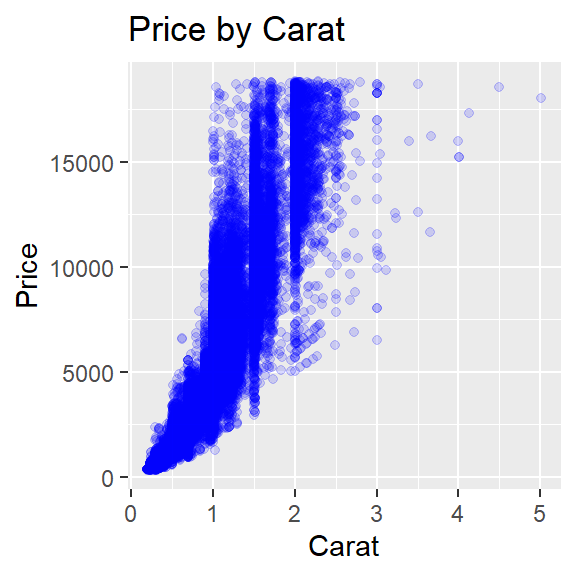
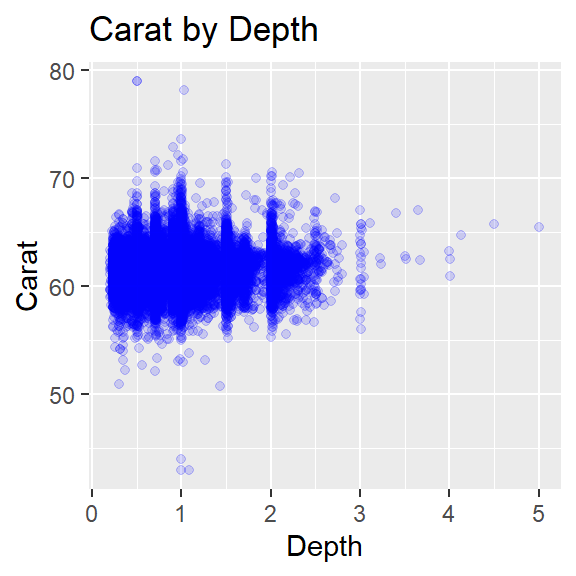
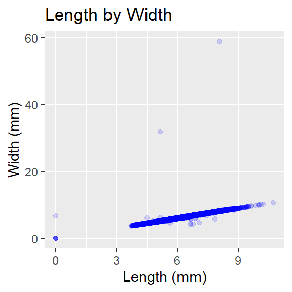
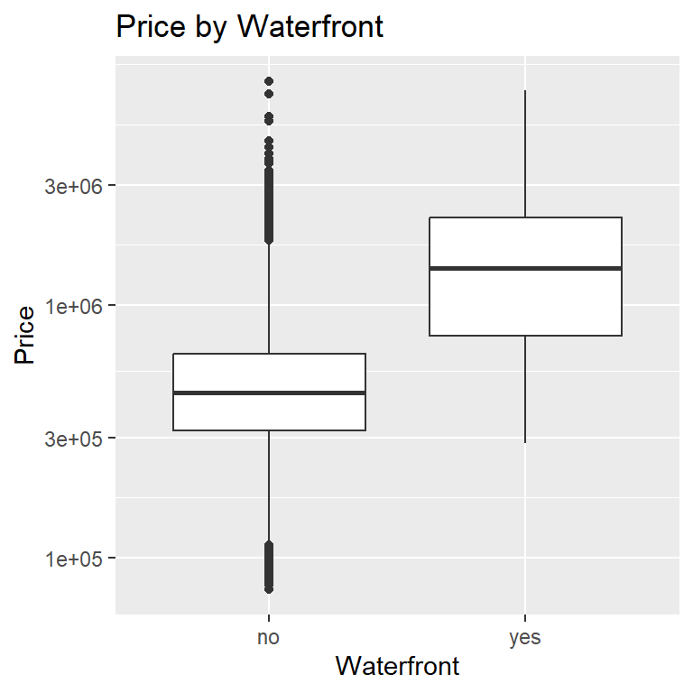
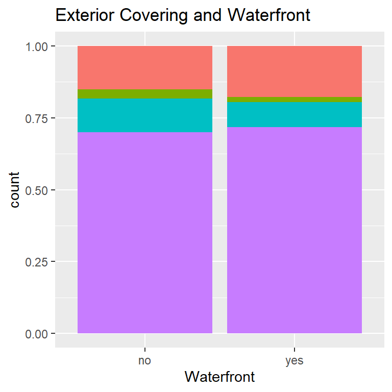
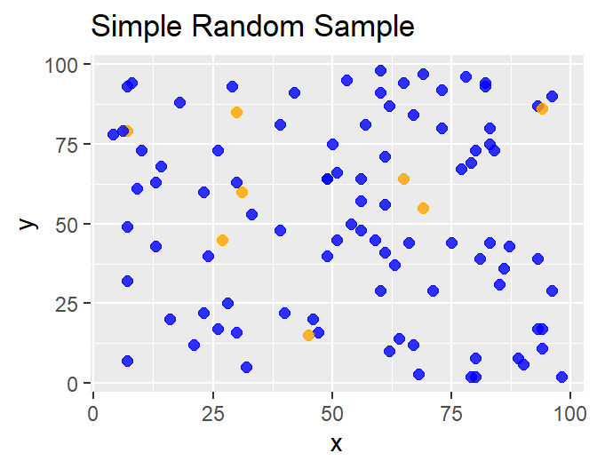
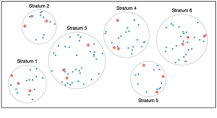
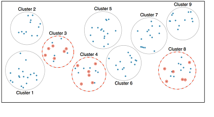

Data and Sampling
This is the first of a series of interactive workbooks you’ll use to engage content from introductory statistics. This workbook covers an introduction to data, including some background on experimental design and data collection.
An Introduction to Data
In this workbook you’ll encounter two datasets – one concerning real
estate from King County, WA (houses) and another containing
prices and attributes of almost 54,000 diamonds (diamonds).
A few rows of the houses data is shown below in a
convenient form where the rows of data represent records
(sometimes called observations), and the columns
represent variables (sometimes called
features). We’ll see later in our course that such data
is called tidy.
You can see the first six rows of the dataset above. A simplified data dictionary (a map of column names and explanations) appears below.
idprovides the property identification number.monthgives the month that the property was listed for sale.priceis the listing price of the property in US dollars ($).sqft_livinggives the finished square footage of the home.sqft_lotgives the square footage of the property (land).waterfrontindicates whether the property is waterfront.exteriorprovides a description of the exterior covering of the home.
Variable Types
Variables which take on numerical values and for which measures such as the mean, median, or standard deviation are meaningful are referred to as numerical. Variables which serve to group data into categories are called categorical – examples include the color of a car or an area code prefix for a telephone number. Note that a telephone area code looks numeric, but since taking their average is meaningless, we consider it to be categorical. It is possible for data to be neither numerical nor categorical – for example, a unique identifier is a non-numeric variable which is unique to each record. A timestamp may be an example of a unique identifier – all is not lost, however, with a bit of pre-processing we can sometimes extract useful information from these columns.
Answer the following using your knowledge of the dataset and variable types.
The levels of a variable are the different (unique)
values that the variable takes on. For example, a dataset on students
might include a variable called ClassYear with the levels
Freshman, Sophomore, Junior, Senior.
Numerical variables also have levels – usually there are lots of levels
corresponding to a numerical variable, but if there are too few, we may
be better off considering the corresponding variable to be categorical.
For example, if we had a dataset that included a Year
variable, but its only observed levels in the dataset are 2008 and 2017,
we may be better off thinking about Year as a categorical
variable than as a numerical one.
Relationships between variables
Association, Independence, Correlation: Two variables are associated with one another if a change in levels of one is generally accompanied by change in the other. That is, larger values of one variable are accompanied by larger (or smaller) values in the other. Think – does knowing something about one of the variables give me any information about the other? If two variables are not associated, then we might say that they are independent of one another. Lastly, correlation is a way to formally measure the strength of a LINEAR association between two variables. Look at the plots considering characteristics of various diamonds below.

Use the plots above to answer the following questions.
Since both of the variables in each of the plots above are numerical, we can describe the direction of the association. Notice that there is a positive association in both of the plots you identified above, since an increase in one of the variables is generally accompanied by an increase in the other. If two numerical variables are associated but an increase in one is generally accompanied by a decrease in the other, we say that the association is negative. For those familiar with lines and slopes, the direction of the association corresponds to the sign on the slope of a line of “best fit” (which we will discuss at the end of our course).
We can also identify whether an association exists between variables
when one or more are categorical. Consider the plots below which refer
back to our houses dataset from earlier.

Did you get the previous question right on the first try? Think about why the answer is as this workbook indicates and ask a question if you need more clarification.
Major Questions In Statistics: Given groups with different characteristics (differing levels) regarding variable X, do they differ with respect to variable Y? For example, we might ask is the average listing price of a waterfront home greater than the average listing price of a home which is not on the waterfront in King County, WA. In this example, X is whether or not the home is on the waterfront and Y is the listing price of the home.
We’ll find that we can’t just answer these questions by looking at plots involving some sample data. Why not?
Data collection principles
Population versus Sample: In statistics, we almost always want to apply generalizations from a small sample to a large population – you might think of this as a sort of stereotyping. The trick here is that for our assertions (generalizations) to be valid, our sample must be representative of our population.
Sampling Strategies: There are many sampling techniques. We will focus on census, simple random sample, stratified sample, and convenience sample.
- If we could sample every object in a population we would be taking a census. While census would give us certainty in an answer to a statistical question, it is not feasible to conduct a census due to phenomenon such as non-response and fluid populations.
- The simple random sample is the GOLD STANDARD in
statistics. We randomly select some “large enough” number of individual
items from the entire population and take measurements on our variables
of interest. The advantage of the simple random sample is that we are
likely to attain a sample of results that are representative of the
entire population.

- The stratified sample is used to ensure that we include
representatives of all groups within our sample. Stratified sampling is
particularly useful in cases where the population is segmented (that is,
there are clear groups which may potentially have different responses)

- The cluster sample is used when we can argue that there are many small “populations” that are truly representative of the larger population. The clustering method is typically used to reduce costs (financial or otherwise). From the collection of clusters, a random sample is selected and as many observations as possible are collected from within each of those chosen clusters.
- A variation on clustering is called two-stage or
multi-stage sampling. With this method, observations are first
clustered and clusters are chosen at random. Second, within each of the
chosen clusters a simple random sample is taken. Notice that this method
occurs in two stages, as the name suggests.

- The convenience sample is the most commonly used sampling method. Unfortunately, it is also the worst. When researchers sample from individuals they have “easy access” to, they are conducting a convenience sample. There are always hidden biases in these samples. Here’s a famous example in which the Literary Digest incorrectly predicted a landslide victory for Alf Landon over FDR in the 1936 US Presidential Election. In addition, much of the error in predicting the results of the 2016 presidential election may be attributable to convenience sampling.
Experimental Design
Experiment versus Observational Study: Beyond just sampling, there are multiple methods for collecting data. We can just observe what happens naturally (without manipulating any conditions) or we can run an experiment. In experiments we manipulate one or more conditions, utilizing a control and treatment group(s). The advantage to an experiment is that we can infer cause and effect relationships (this is extremely important in medical studies), but in observational studies we can only discuss an association between variables.
Predictor versus Response Variables: Typically in statistics we will identify a question (a claim about a response variable) with respect to a population. We will take a representative sample of that population and collect observed responses as well as observations on other variables (perhaps age, level of formal education, political affiliation, etc). These additional variables are called predictor variables. In general, predictor variables are quantities which we expect may be associated with the response variable.
There’s lots more to learn about experimental design, but it is beyond the scope of this notebook. You should read pages 32 through 35 of OpenIntro Statistics, 4Ed as a starting point.
Submit
Summary
Summary: Here’s a quick summary of the most important ideas from this first notebook.
- Data is stored in a table called a data frame. The rows of the data frame are observations and the columns are collected variables.
- Within this introductory course, data is either numerical or categorical – to determine type, ask “is the average of these observations meaningful?”
- Two variables are associated if a change in one has some (even limited) predictive value about a change in the other.
- There are many ways data can be collected, but in order to produce meaningful results we must use random sampling.
- Results from a sample can be generalized only to a population for which that sample is representative.